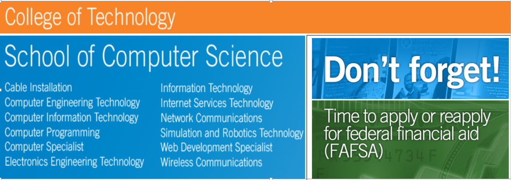

History of Daytona State College
Over the past 50-plus years, Daytona State College has evolved from a small campus into an academically superior multi-campus institution providing educational and cultural programs for the citizens of Volusia and Flagler counties. It began in 1957 when the Florida Legislature authorized Daytona Beach Junior College as one of the state's first comprehensive colleges. Daytona State College is accredited by the Southern Association of Colleges and Schools Commission on Colleges to award associate and bachelors degrees. Contact the Commission on Colleges at 1866 Southern Lane, Decatur, Georgia 30033-4097 or call 404-679-4500 for questions about the accreditation of Daytona State College.Daytona State College is accredited by the Souther Association of Colleges and Schools Commission on Colleges to award associate and bachelor's degrees. Contact the Commission on Celleges at 1866 Souther Lane, Decatur, Georgia 30033-4097 or call 404-679-4500 for questions about the accredetitation of Dayton State College.
About Computer Science
While the computing field is one of the fastest growing segments of industry, it is also one of the fastest changing areas technologically. Computing professionals education does not stop with the college degree, but continues with seminars, conferences, and advanced courses and training. In computer theory and applications, new ideas are developed every day. Success requires an ongoing commitment to learning to maintain knowledge, skills and career opportunities.